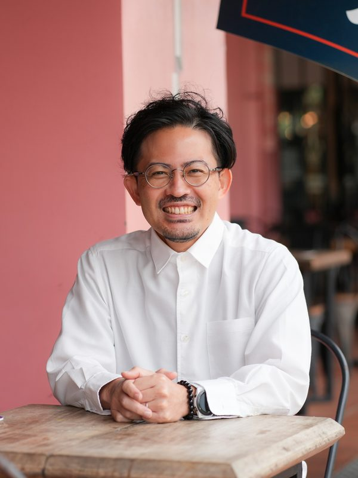
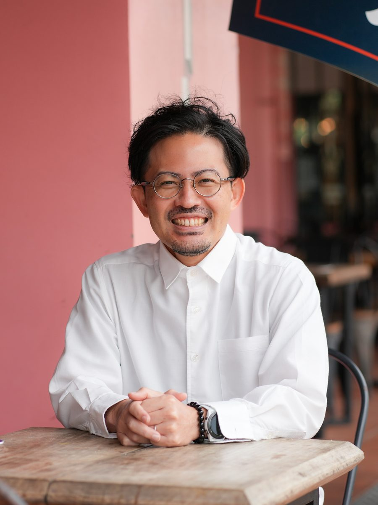
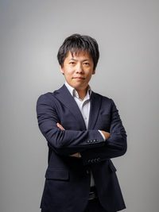
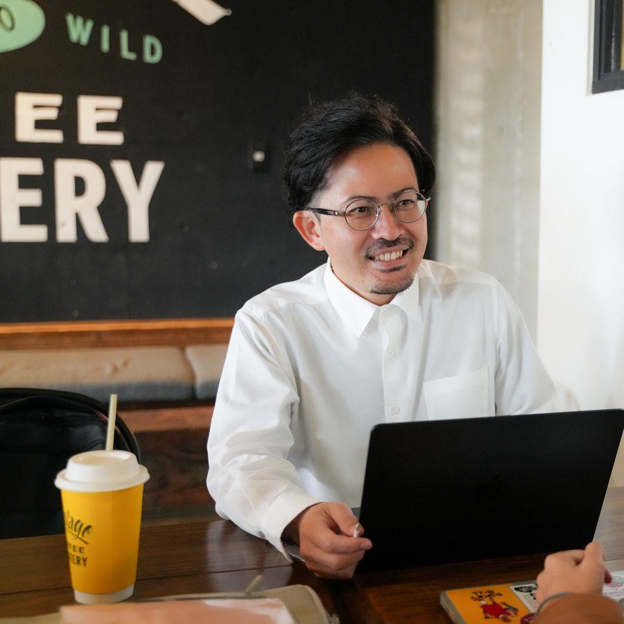
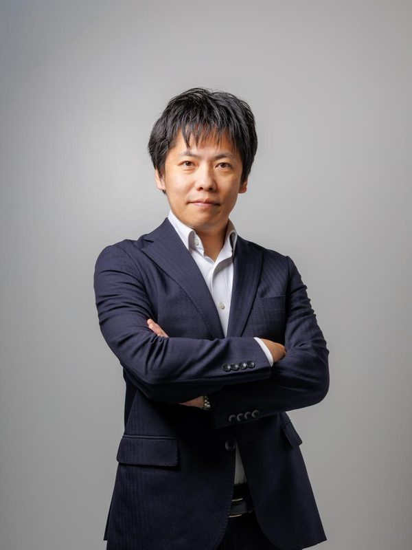

棚原秀樹
U-WAN代表／AI × 経営コンサルタント
沖縄県読谷村出身。タスマニア大学（MBA）。AI導入支援、組織づくり、儲かる体質づくりに取り組んでいます。
今回は、セミナーの講師として、普段のAI社員の動きを実際の画面でお見せします。
こんなお悩み、ありませんか？
AIを使っている経営者も、これから学びたい経営者も、同じように感じることのある悩みです。
売上・利益を上げるAI活用「3適」と月給460円で働くAI社員のリアルをお見せします
このセミナーの目玉
法人設立記念セミナーの第一弾として、棚原が、次の3つをお見せします。
人とともに働くAI社員の画面を、実際のデータでお見せします。
2024年から2026年9月までの粗利の推移を、実際のデータでお見せします。
AIを売上・利益に繋げるために、棚原が整えた3つのポイント。中身は、当日お話しします。
経営者・経営層の方のみのご参加となります。すでにAIを使っている方も、これから本格的に使う方も、ご参加いただけます。


IPA『DX動向2026』では、AIを導入・活用して、顧客満足度が向上したか、売上や利益が向上したかという問いに「はい」と答えた方が、それぞれ4.5%、3.9%とされています。
棚原は、こう見ています。
多くの方が、AIによる効率化の効果は、もう感じています。
次の一段は、経営の指標である売上・利益。
その手前まで、すでに来ています。その先に、まだ大きな余地が広がっています。
そこに、3適を足すと、AIの恩恵が売上・利益にも届きやすくなります。

AIを売上・利益に繋げるための3つのポイントを、棚原は「3適」と呼んでいます。
その中身は、当日、スライドと実際の画面を行き来しながら、ざっくばらんにお話しします。
棚原は、仕事を任せるAI（いわゆるAIエージェント）を「AI社員」と呼んでいます。その働く様子を、当日、実際の画面でお見せします。
2024年から2026年9月までの、粗利の推移を、実際のデータでお見せします。
棚原のAI社員が実際に働いている画面を、サンプルデータで実演します。
AI社員は、人を置き換えるためではなく、人とともに働くための存在です。その働き方と、今の棚原の使い方をお話しします。
当日の状況により、内容が変わることがあります。
ゲスト：安永智也さん
Anthropic公式のClaudeコミュニティアンバサダーである安永智也さんを、ゲストにお迎えします。棚原のセミナーの後に、安永さんからもコメントをいただきます。
専門用語をできるだけ使わず、実際の画面を見ながら、ざっくばらんにお話しします。AIにまだ詳しくない方にも、流れが追えるように進めます。
経営者・経営層の方に向けた内容です。現場の使い方だけでなく、売上・利益という経営の視点で、AIをどう活かすかをお話しします。
棚原が実際に使っている画面を見ると、「自社なら、こう使えるかもしれない」というイメージが湧いてきます。セミナーの後に、AIを使ってみたくなる時間を目指しています。
AI社員やClaude Codeなど、いま使われ始めているAIの動きを、実際の画面でご覧いただきます。
こんな方に
※経営者・経営層の方のみのご参加となります。経営判断の視点を中心にお話しするセミナーのため、社員の方のご参加はご遠慮いただいています。恐れ入りますが、ご了承ください。

U-WAN代表／AI × 経営コンサルタント
沖縄県読谷村出身。タスマニア大学（MBA）。AI導入支援、組織づくり、儲かる体質づくりに取り組んでいます。
今回は、セミナーの講師として、普段のAI社員の動きを実際の画面でお見せします。

有料AIコミュニティ「SHIFT AI」の中核メンバーとして、これまでに5,000人以上にAIを指導してきた方です。
今回は、棚原のセミナーの後に、安永さんからもコメントをいただきます。
Anthropic公式のClaudeコミュニティアンバサダーの目線で、棚原の話をどう見るかをお聞きできる時間です。
参加費1,500円（税込）は、事前決済でお支払いいただきます。当日その場で、追加のお支払いをお願いすることはありません。
セミナーの最後に、ご希望の方向けに、無料個別相談のお申し込み方法をご案内します（相談は後日です）。ご参加は任意です。
お申し込み直後に、夜の部の特別なご案内の画面が表示されます（ご参加は任意です）。
大丈夫です。これからAIを本格的に使う方にも、すでに導入している方にも、参考にしていただける内容です。その両方を持ったままでお聴きください。
時間割は設けず、ざっくばらんに進めます。
途中でのご入退場はご遠慮いただいています。
参加費
1,500円（税込・事前決済）
参加費に含まれるもの
※資料の配布・録画はありません。会場でご覧いただく形でお伝えします。
お申し込みについて
お申し込みは事前のオンライン決済制です。大変恐れ入りますが、お申し込み後のキャンセル・返金は承っておりません。定員20名の少人数開催のため、まずはご予定をよくご確認のうえ、お申し込みをお願いいたします。
| 位置付け | 法人設立記念セミナー 第一弾（昼の部）／第二弾（夜の部） |
|---|---|
| 日時 | 2026年10月26日（月）開場9:30／10:00〜12:00 |
| 会場 | 宜野湾ベイサイド情報センター（沖縄県宜野湾市） 地図を開く |
| 参加費 | 1,500円（税込・事前決済） |
| 対象 | 経営者・経営層の方（社員の方のご参加はご遠慮いただいています） |
| 登壇 | 棚原秀樹／ゲスト：安永智也さん（セミナーの後にコメント） |
| 形式 | 会場参加のみ。オンライン配信はありません。資料の配布・録画はありません。途中でのご入退場はご遠慮いただいています |
| 定員 | 20名（先着順） |
同じ日の夜、同じ会場で「沖縄AIセミナー 第2回 夜の部」を、法人設立記念セミナーの第二弾として開きます。
参加費は1,500円（税込）です。お支払いは、事前のクレジットカード決済（Stripe）のみとなっております。恐れ入りますが、銀行振込でのお支払いは承っておりません。
経営者・経営層向けに、AIを売上・利益に繋げる3つのポイント「3適」と、棚原のAI社員が実際に働いている画面を、棚原自身の数字とあわせてお話しするセミナーです。セミナーの後に、ゲストの安永智也さんからコメントをいただきます。当日、会場で個別に相談をお受けする時間は設けていません。個別相談をご希望の方には、最後にお申し込み方法をご案内します（相談は後日です）。
中小企業・小規模な会社ほど、AIの効果や成果が出やすい面があると、棚原は考えています。意思決定が早く、社長のひと声で動けるという、小回りの良さがあるためです。当日は、その考え方もお話しします。
経営者・経営層の方のみのご参加となります。経営判断の視点を中心にお話しするセミナーのため、社員の方のご参加はご遠慮いただいています。恐れ入りますが、ご了承ください。
資料の配布と録画は行いません。会場でご覧いただく形でお伝えします。
今回は会場参加のみで、オンライン配信は行いません。
駐車場はありますが、台数に限りがあります。少し早めのご来場や公共交通機関のご利用もご検討ください。
大変恐れ入りますが、お申し込み後のキャンセル・返金は承っておりません。定員20名の少人数開催のため、まずはご予定をよくご確認のうえ、お申し込みをお願いいたします。もし当日どうしてもご参加が難しくなった場合は、前日（10月25日）までに、お申し込み完了メールへのご返信でご一報いただけると、他の方にお席をご案内できて助かります。
はい。夜の部（開場18:00／18:30〜20:30）も、同じ会場で、第二弾として開きます。昼の部とは別のセミナーで、昼の部は12:00に終了します。昼の部にお申し込みいただいた後に、特別なご案内をいたします。お申し込み直後の画面で、ご案内が表示されます。
途中でのご入退場はご遠慮いただいています。開始時刻までにお越しください。
棚原のリアルな数字と、AI社員が実際に働いている画面を、お見せします。
ゲストの安永さんからのコメントも、あわせて楽しみにしていてください。
ざっくばらんなセミナーですので、肩の力を抜いて来てください。定員は20名、先着順です。
追伸
このページを最後まで読んでくださって、ありがとうございます。
ご都合が合えば、10月26日の午前、宜野湾でお会いできたら嬉しいです。